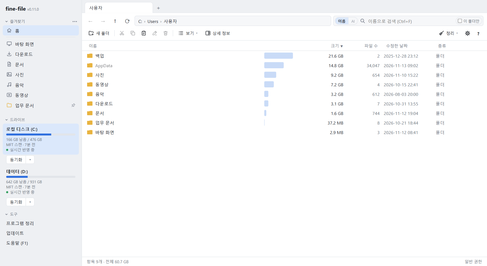
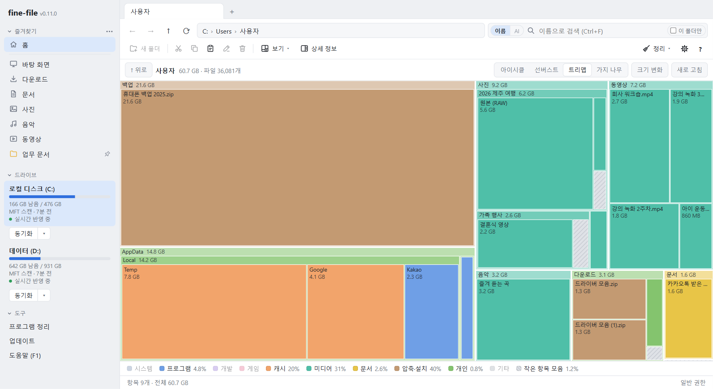
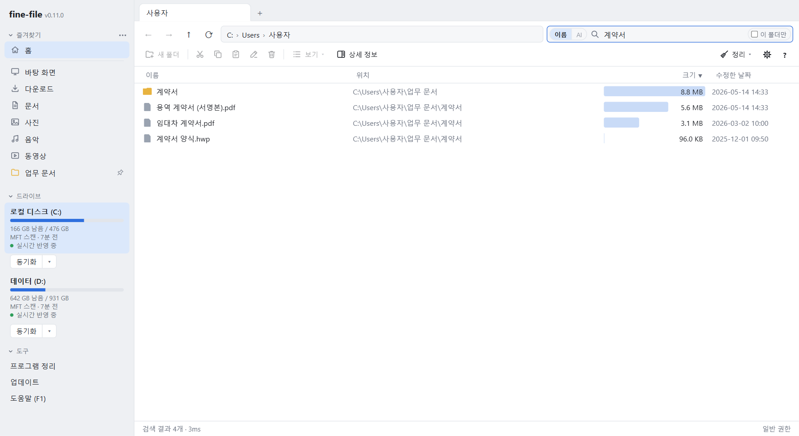
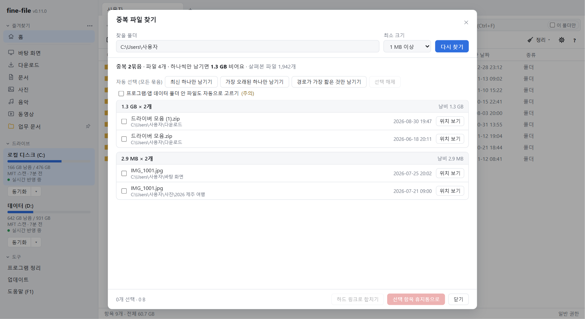
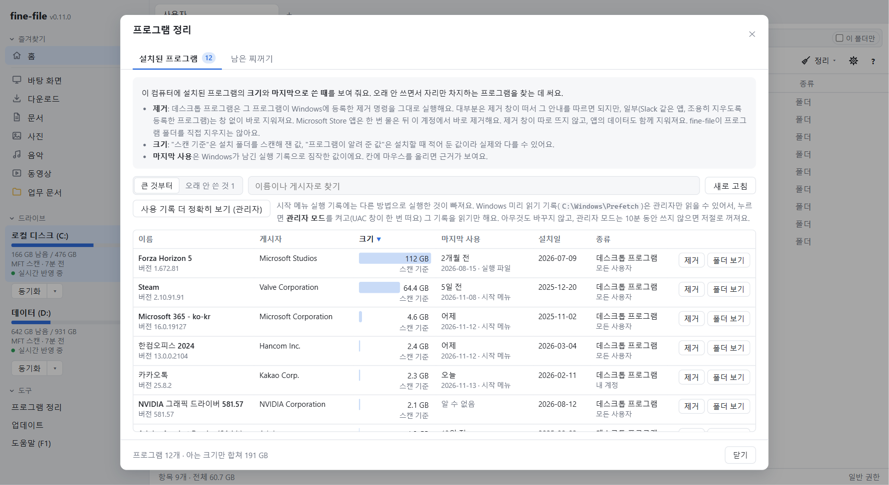
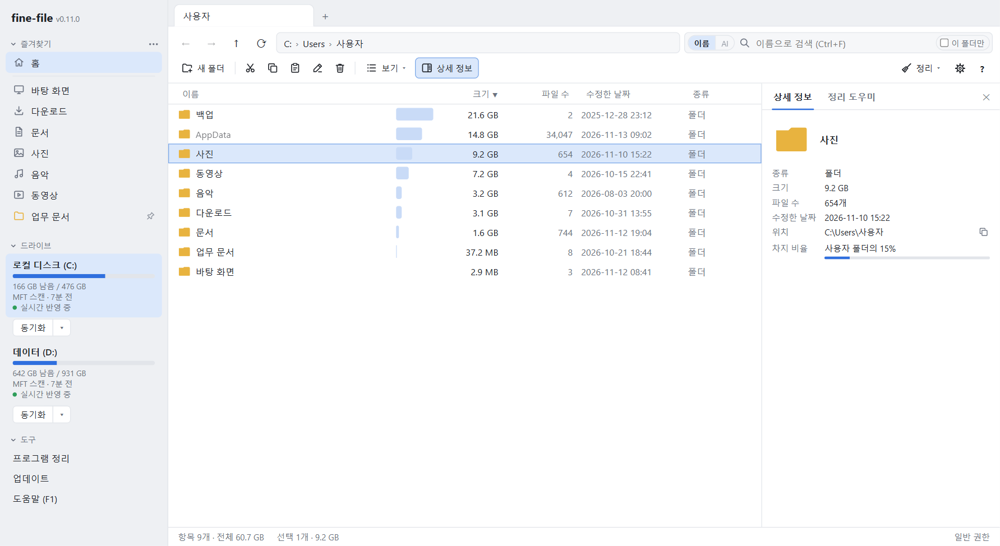

기능 안내
실제 화면에 번호를 붙였습니다. 사진 위에 마우스를 올리면 번호가 흐려지고, 설명에 올리면 그 번호만 보입니다. 화면의 폴더와 파일은 시연용 예제입니다.
주 창
폴더를 열면 크기, 파일 수, 크기 막대가 바로 보입니다. 왼쪽에는 즐겨찾기와 드라이브 상태가 있습니다.

- 즐겨찾기 즐겨찾기: Windows 탐색기의 왼쪽 창처럼 홈, 바탕 화면, 다운로드, 문서, 사진, 음악, 동영상과 고정한 폴더로 바로 가요.
- 드라이브 상태 드라이브: 남은 용량과 마지막 스캔, 실시간 반영 상태를 보여 주고, 누르면 그 드라이브를 열어요.
- 주소창 주소창: 지금 폴더의 경로예요. 경로 조각을 누르면 그 폴더로 가요.
- 이름 검색 스캔한 모든 드라이브에서 이름으로 바로 찾아요. 띄어쓰기로 여러 단어, * · ? 와일드카드 (Ctrl+F).
- 보기 방식 보기 방식: 목록, 트리, 아이콘, 지도 중에서 골라요 (Ctrl+Shift+1~4). 탭마다 따로 기억해요.
- 상세 정보 상세 정보 (Alt+P): 고른 항목의 종류, 크기, 날짜, 위치와 미리 보기를 옆 창에 보여 줘요.
- 정리 메뉴 이 폴더를 정리하는 도구 모음이에요: 정리 도우미, 정리 계획, 중복 찾기, 하드 링크 찾기·풀기, 프로그램 정리.
- 크기 막대 폴더마다 지금 폴더 안에서 차지하는 크기를 막대 길이로 견줘 보여 줘요.
- 폴더 크기 열 폴더 크기 열: 모든 폴더 옆에 용량이 바로 보여요. 머리글을 누르면 크기순으로 정렬해요.
- 파일 수 열 폴더 안에 든 파일 수예요. 하위 폴더까지 모두 세요.
크기 지도
지도 보기는 지금 폴더 아래를 크기만큼의 넓이로 그립니다. 분류마다 색이 다릅니다.

- 크기 지도 지금 폴더 아래 4단계까지를 크기만큼의 넓이로 그려요. 칸을 누르면 그 폴더로 들어가요.
- 지도 모양 아이시클·선버스트·트리맵·가지 나무 중에서 지도 모양을 골라요.
- 크기 변화 크기 변화: 지난 스캔과 비교해서 커지거나 작아진 곳을 색으로 보여요.
- 분류 색 시스템·프로그램·개발·게임·캐시·미디어·문서·압축·설치·개인·기타로 색이 나뉘고, 분류마다 차지하는 비율을 보여 줘요.
- 위로 한 단계 위 폴더의 지도로 가요.
- 폴더 합계 지도로 그린 폴더의 전체 크기와 파일 수예요.
- 보기 방식 보기 방식: 목록, 트리, 아이콘, 지도 중에서 골라요 (Ctrl+Shift+1~4). 탭마다 따로 기억해요.
즉시 검색
검색창에 입력하면 모든 드라이브에서 바로 찾습니다. AI 검색은 고를 때만 씁니다.

- 검색창 스캔한 모든 드라이브에서 이름으로 바로 찾아요. 띄어쓰기로 여러 단어, * · ? 와일드카드 (Ctrl+F).
- 이름 검색 이름 검색 (Ctrl+F): 이름에 든 글자로 치는 대로 바로 찾아요. AI 없이 동작해요.
- AI 검색 AI 검색 (Ctrl+Shift+F): 이름에 없는 말로 뜻으로 찾아요. Enter를 눌러야 찾아요.
- 이 폴더만 켜면 지금 폴더 아래에서만 찾아요. 끄면 스캔한 모든 드라이브에서 찾아요.
- 위치 열 찾은 항목이 들어 있는 폴더예요.
- 검색 결과 모든 드라이브의 파일 이름을 메모리에서 찾아, 입력하는 즉시 결과가 바뀌어요.
- 결과 수·걸린 시간 찾은 항목 수와 검색에 걸린 시간이에요.
중복 파일 찾기
정리 메뉴의 중복 파일 찾기는 내용이 똑같은 파일을 묶어 보여 줍니다.

- 찾을 폴더 이 폴더 아래에서 내용이 똑같은 파일을 찾아요. 스캔한 드라이브에서만 찾을 수 있어요.
- 최소 크기 이보다 작은 파일은 건너뛰어요.
- 다시 찾기 크기가 같은 파일을 먼저 고르고, 앞부분과 전체 내용을 차례로 비교해서 내용이 똑같은 파일만 보여 줘요.
- 찾은 결과 요약 중복 묶음 수와, 하나씩만 남기면 비는 용량이에요.
- 자동 선택 묶음마다 남길 파일 하나를 정하고 나머지를 골라 줘요.
- 중복 묶음 내용이 똑같은 파일 묶음이에요. 크기와 낭비되는 용량이 머리에 보여요.
- 위치 보기 그 파일이 있는 폴더를 열어 보여 줘요.
- 하드 링크로 합치기 같은 내용을 한 번만 저장하고 모든 경로에서 그대로 열리게 합쳐요. 원래 사본은 휴지통으로 가요.
- 휴지통으로 고른 사본을 휴지통으로 보내요. 영구 삭제는 하지 않아요.
프로그램 정리
설치된 프로그램을 크기와 마지막 사용 시점으로 살펴보고 정리합니다.

- 합계 목록의 프로그램 수와, 크기를 아는 것만 합친 전체 크기예요.
- 설치된 프로그램 이 컴퓨터에 설치된 프로그램의 크기와 마지막으로 쓴 때를 보여 줘요.
- 남은 찌꺼기 지운 프로그램이 남긴 폴더를 찾아요.
- 오래 안 쓴 것 6개월 넘게 쓰지 않았거나, 쓴 기록 없이 6개월보다 전에 설치한 프로그램만 보여요.
- 프로그램 찾기 이름이나 게시자로 프로그램을 찾아요.
- 사용 기록 더 정확히 관리자 모드(UAC 창 한 번)로 Windows 미리 읽기(Prefetch) 기록을 읽어요.
- 크기 (스캔 기준) 설치 폴더를 스캔한 결과로 잰 크기예요.
- 마지막 사용 Windows가 남긴 실행 기록으로 짐작한 값이에요. 마우스를 올리면 근거가 보여요.
- 제거 프로그램이 Windows에 등록한 제거 명령을 그대로 실행해요. fine-file이 폴더를 직접 지우지는 않아요.
상세 정보
고른 항목의 정보를 옆 창에 보여 줍니다. 정리 도우미 탭으로 오갈 수 있습니다.

- 상세 정보 창 고른 항목의 종류, 크기, 파일 수, 날짜, 위치를 옆 창에 보여 줘요.
- 상세 정보 버튼 상세 정보 (Alt+P): 고른 항목의 종류, 크기, 날짜, 위치와 미리 보기를 옆 창에 보여 줘요.
- 정리 도우미 탭 고른 항목이나 지금 폴더를 AI로 설명하고 정리 계획을 만드는 옆 창이에요.
- 차지 비율 고른 항목이 지금 폴더에서 차지하는 비율이에요.
- 경로 복사 전체 경로를 글자로 클립보드에 복사해요.
- 고른 항목 목록에서 고른 항목이에요. 상세 정보 창이 이 항목을 따라 바뀌어요.
- 휴지통으로 휴지통으로 보내요 (Delete). 영구 삭제는 하지 않아요.
- 선택 요약 고른 항목 수와 크기예요.